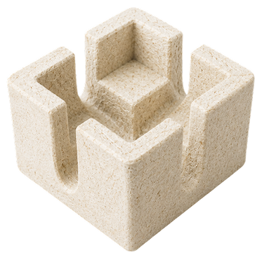

Kemasan Jamur.
Pengganti Styrofoam.
Kuat, ringan, dan 100% terurai kembali menjadi kompos. Solusi kemasan organik untuk brand Anda.
Setiap menit, 1 truk sampah plastik
dibuang ke lautan.
Polystyrene (EPS/Styrofoam) menjadi salah satu polutan paling persisten di bumi — tak terurai, tak terlihat, tapi merusak segalanya.
Styrofoam menjadi sampah. MushFoam menjadi kompos.
Kenapa Styrofoam Jadi Masalah
-
Bertahan ratusan tahun di alam
-
Rontok dan mengotori produk
-
Kurang baik untuk citra lingkungan
Apa yang Membuat Kami Berbeda
-
Terurai jadi pupuk dalam hitungan minggu
-
Menyerap benturan tanpa retak
-
Eco-branding yang kuat
Pilih bentuk perlindungan yang tepat.
MushFlat
Lembaran bio-komposit miselium serbaguna untuk pelapis kardus atau bantalan kargo. Dimensi presisi dengan lapisan beeswax anti-air — ringan, kuat, terurai alami.

MushCube
Blok miselium kompak untuk corner insert dan pengisi celah kemasan. Dimensi 15×15 cm, tinggi 5 cm, tebal 1,3 cm — cocok untuk elektronik, furnitur, dan keramik.
Bagaimana jika kemasan bisa dikembalikan ke tanah?
Kami merajut serat ampas tebu menggunakan miselium jamur tiram menjadi material pelindung yang ringan dan tangguh.
Tanpa bahan kimia, tanpa plastik. Setelah bertugas, ia kembali menjadi bagian dari alam.

Dari ladang, kembali ke tanah
Pertanian
Fabrikasi
Kemasan
Alami
Lima tahap dari limbah ladang ke kemasan siap kirim
Mahasiswa lintas disiplin UGM
Divo Cahaya Fikri
Teknik Nuklir Ketua TimNasyawana Ladita
Kimia Produksi & QCUmi Muthoharoh
Akuntansi KeuanganReyhan Abelard
Rek. Perangkat Lunak Teknologi DigitalBalqhis Naila
Filsafat PR & EdukasiMushFoam vs. kemasan konvensional
Evaluasi teknis dan ekologis terhadap tiga pilihan kemasan pelindung di pasar.
| Parameter | 🌿 MushFoam | Styrofoam (EPS) | Molded Pulp |
|---|---|---|---|
| Terurai secara alami | ✓ Beberapa minggu | ✗ 100–500 tahun | ✓ Ya |
| Daya serap benturan | ✓ Sangat baik | ✗ Getas & rontok | ✗ Kurang untuk beban berat |
| Ketahanan terhadap air | ✓ Tahan (lapisan beeswax) | ✓ Tahan | ✗ Mudah lembek |
| Kustomisasi bentuk 3D | ✓ Mudah & fleksibel | ✗ Cetakan mahal | ✗ Butuh mesin berat |
| Sisa pasca pakai | ✓ Jadi pupuk organik | ✗ Mikroplastik abadi | ✓ Bubur kertas |
| Nilai eco-branding | ✓ Tinggi | ✗ Buruk | ✓ Standar |
| Estimasi harga | Rp 5.000 / pcs | Rp 4.000 / pcs | Rp 6.500 / pcs |
Seberapa besar dampak yang bisa Anda ciptakan?
Geser slider untuk melihat proyeksi pengurangan sampah plastik dari kebutuhan pengemasan bisnis Anda setiap bulannya.
Yang sering ditanyakan
Tidak. Sebelum produk selesai, MushFoam melewati proses pemanasan di oven 80–90°C selama 4–8 jam yang secara permanen menghentikan semua aktivitas biologis. Material menjadi kering dan steril — tidak akan tumbuh kembali meski terkena air.
Dalam kondisi penyimpanan ruangan yang kering, MushFoam bisa bertahan bertahun-tahun tanpa penurunan kekuatan. Penguraian alami baru aktif saat material dikubur di tanah yang kaya mikroorganisme — bukan di rak gudang.
Struktur miselium membentuk matriks serat yang elastis, menyerap dan mendistribusikan energi benturan secara merata. Dikombinasikan dengan lapisan beeswax, performa pengirimannya setara dengan busa sintetis konvensional.
Ya. Kami melayani pengiriman sampel ke seluruh Indonesia. Isi formulir atau hubungi kami via WhatsApp, dan tim kami akan mengurus pengirimannya.
Tertarik mencoba MushFoam untuk bisnis Anda?
Hubungi kami untuk sampel gratis dan informasi penawaran kemasan MushFoam sesuai kebutuhan bisnis Anda.